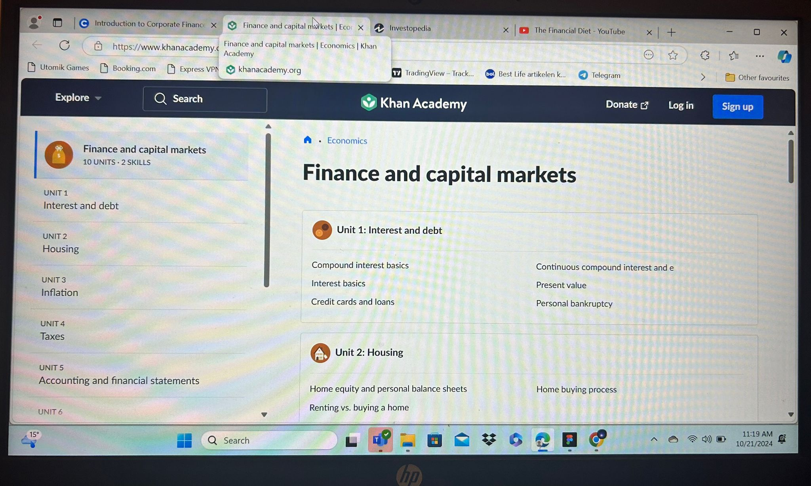
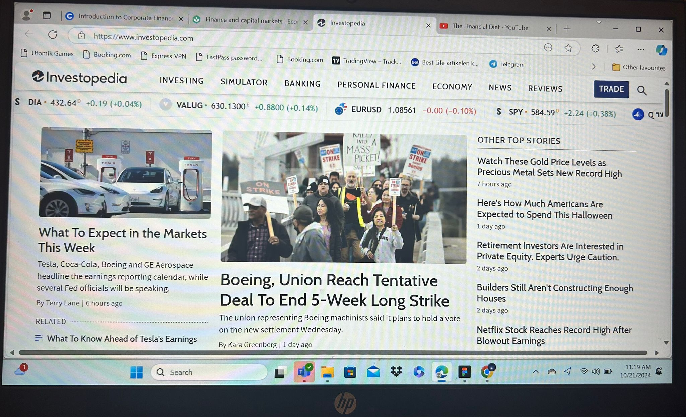
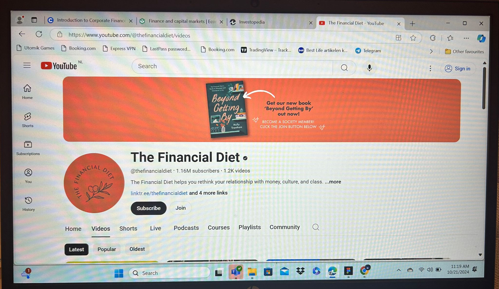

Khan Academy - Finance and Capital Markets
Why it’s important: Khan Academy is a free, student-friendly platform with easy-to-understand lessons on
finance. It covers a wide range of topics, from personal finance to how the stock market works, in a
very clear and detailed way.
Key topics:
Stock market basics
Bonds, stocks, and investing
Corporate finance fundamental

Khan is popular ™ and reliable
Platform:
Investopedia
Why it’s important: Investopedia is one of the best sources for easy-to-read finance articles and
definitions. It's perfect for looking up specific terms and understanding financial concepts. The site
offers tutorials, calculators, and in-depth explanations of complex topics.
Key topics:
Personal finance management
Financial terms and definitions
Investment basics

Investopedia is popular € and reliable
Platform:
The Financial Diet YouTube
Why it’s important: This YouTube channel provides practical advice for students and young adults on
managing personal finance. The videos are easy to follow and focus on budgeting, saving, and handling
money responsibly, which are crucial skills for finance students.
Key topics:
Budgeting tips for students
Managing debt and student loans
Beginner investing advice

Financial is popular £ and reliable